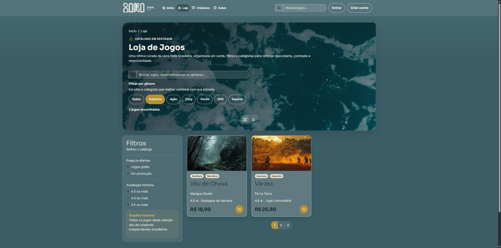
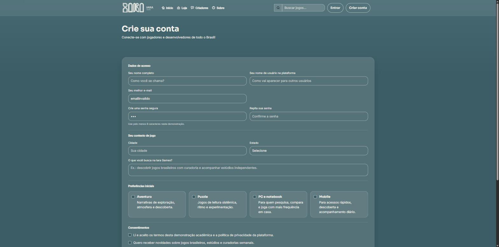
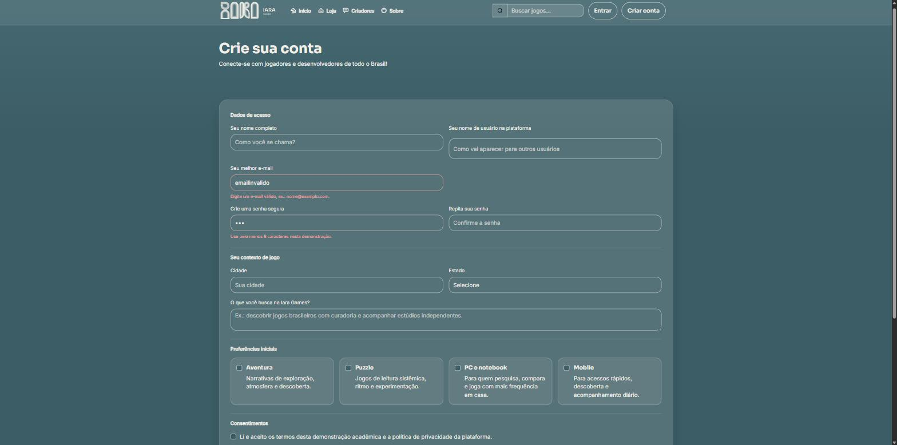
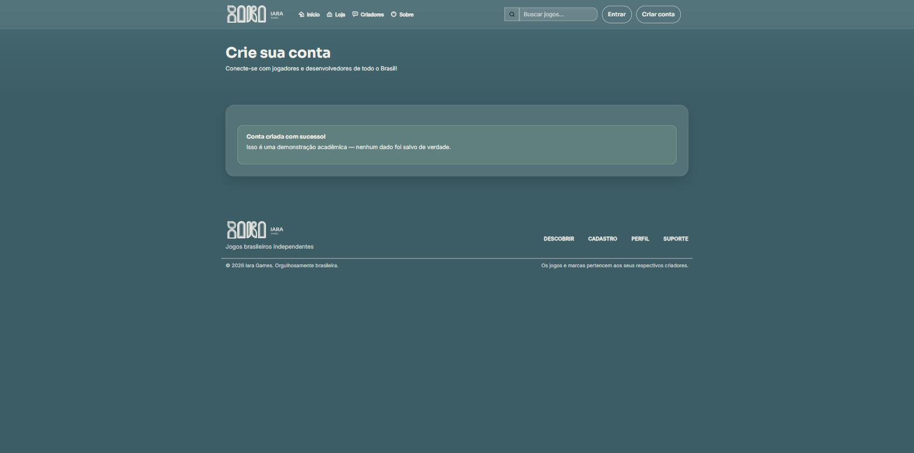
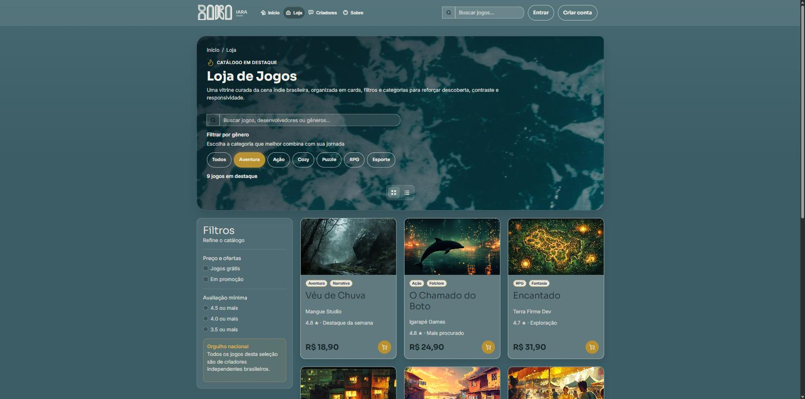
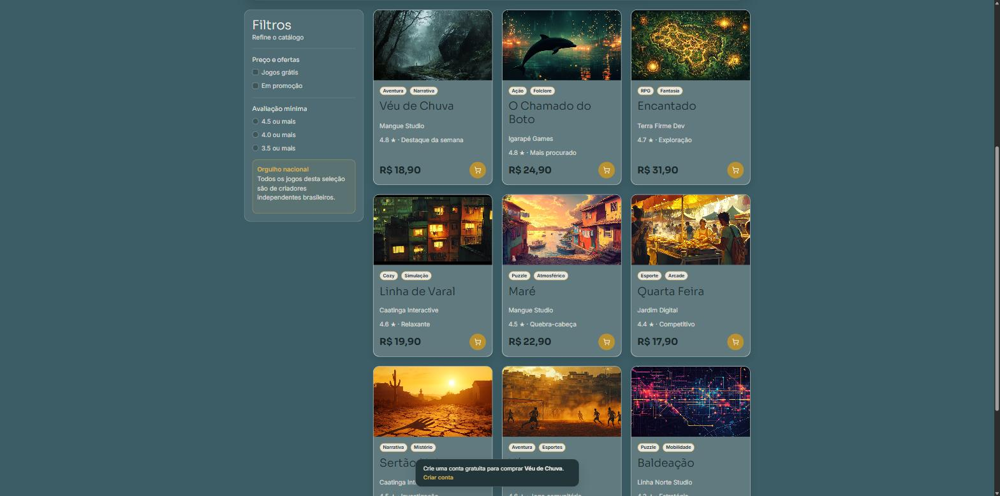

Iara Games · Documentação das implementações de JavaScript
Na Sprint 4, o grupo analisou problemas reais de interação na Home usando as categorias de Alan Cooper. Nesta sprint, o mesmo tipo de análise foi aplicado ao restante do protótipo (HTML/CSS) para encontrar comportamentos que pareciam prontos mas não reagiam a nenhuma ação do usuário. Foram identificados e resolvidos três problemas reais com JavaScript, descritos a seguir.
Na página da Loja, os chips de filtro por gênero (“Aventura”, “Ação”, “Cozy”, “Puzzle”, “RPG”, “Esporte”) mudavam apenas a própria aparência ao serem clicados — a grade de jogos abaixo não mudava em nada. O usuário clicava esperando ver só os jogos daquele gênero e via a lista inteira continuar igual, sem nenhuma explicação.
<article>) recebeu um atributo data-genre com o gênero primário do jogo.data-genre-filter com o mesmo valor.click em cada chip roda classList.toggle("is-hidden", ...) em cada card, comparando data-genre com o filtro ativo.textContent, e uma mensagem de “nenhum jogo encontrado” aparece caso o filtro zere a lista.Ao clicar em um gênero, a grade recalcula na hora: só os jogos daquele gênero continuam visíveis, e o contador acima confirma quantos itens restaram.

O formulário de cadastro já tinha o atributo novalidate (sinal de que esperava
validação customizada), mas nenhum campo era validado. Um e-mail sem “@”, uma senha de 3
caracteres ou senhas que não coincidiam podiam ser digitados sem nenhum aviso — o usuário só
descobriria o problema depois, ao tentar usar a conta.
input/change em nome, e-mail, senha, confirmação de senha e estado.is-valid/is-invalid, além de uma mensagem inline no elemento .field-help correspondente.submit no formulário chama preventDefault(), revalida tudo de uma vez e só then mostra a confirmação — como não há backend, o “sucesso” é só visual.Ao digitar um e-mail ou senha inválidos, o campo mostra o erro imediatamente, sem precisar enviar o formulário. Ao corrigir, aparece uma confirmação visual. Com tudo certo, o envio mostra uma mensagem de conta criada.



Os botões de carrinho na Loja eram links mortos (href="#"): clicar não fazia
nada. Isso é inconsistente com a Home, onde o mesmo botão já explica (via tooltip) que é
preciso criar conta para comprar — na Loja, o usuário deslogado só via o clique não dar em
nada, sem entender por quê.
click em cada botão de carrinho, com preventDefault().aria-label do botão (já existia no HTML).document.createElement e inserido no <body>, com uma transição CSS de entrada/saída controlada por uma classe (is-visible) e removida automaticamente após alguns segundos com setTimeout.Ao clicar em qualquer botão de carrinho na Loja, uma mensagem aparece no rodapé da tela explicando que é preciso criar conta, com um link direto para o cadastro — em vez de um clique que não faz nada.

